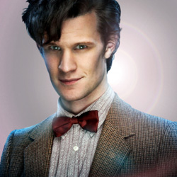

| Home | The Doctors | The Companions | The Villians |
|
|||
The Doctors
|
The Eleventh Doctor mith was revealed as the Eleventh Doctor in the British science-fiction television series Doctor Who in January 2009[17] to replace David Tennant, who announced his departure in October 2008.[18] Smith was a relatively unknown actor compared to the actors then speculated about possibly taking on the role, who included Paterson Joseph, David Morrissey, Sean Pertwee, James Nesbitt, Russell Tovey, Catherine Zeta-Jones, Chiwetel Ejiofor, Robert Carlyle, and Billie Piper.[19] Smith was first named as a possible successor less than a day before he was announced as the Eleventh Doctor, on 3 January 2009 edition of BBC Breakfast, among the names speculated about.[20] His obscurity prompted the news headline "Doctor Who?", a riff on the show's title.[21][22] File:Doctor Who filming - Matt Smith with Karen Gillan.ogv Doctor Who filming, with Matt Smith as Eleventh Doctor, and Karen Gillan as Amy Pond Smith was one of the earliest actors to audition for the role, performing on the first day. The production team, consisting of the incoming producer, Steven Moffat, and BBC Wales Head of Drama and executive producer, Piers Wenger, immediately singled him out based on his performance.Smith additionally auditioned for the role of John Watson in the Moffat-created Sherlock, undergoing auditions at the same time; he was unsuccessful, as Moffat believed his eccentric acting style was closer to Holmes, whose role had already been given to Benedict Cumberbatch.[23] At 26 years old, Smith was three years younger than Peter Davison was at the time of his casting as the Doctor in 1981, and younger than any other actor suggested for the role. After three weeks of auditions, Moffat and Wenger agreed that it had "always been Matt" and approached him to accept the role. The BBC were cautious about casting him because they felt that a 26-year-old could not play the Doctor adequately; Wenger shared the same sentiment but thought Smith had proven his acting quality in Party Animals, which Wenger thought highlighted Smith's "mercurial qualities". Some fans of the show believed that Smith was inexperienced and too young for the role, while others supported him by citing his demonstrated acting ability.[27] For his performance in his first series he was nominated in the Outstanding Drama Performance Category of the National Television Awards.[28] Smith is the first Doctor to be nominated for a BAFTA for Best Actor. |